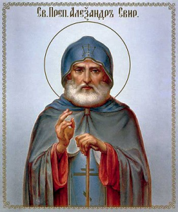

Место: Свято-Троицкий мужской монастырь Александра Свирского (город Старая Слобода в Ленинградской области).
Вход: 3000 руб.
Дата, время: 4 октября 2015 в 17:00
Многие правители перед тем как взойти на престол ездили к нему за благословением:— Он наделяет благоразумием, способностью видеть ситуации целостно и принимать спокойные мудрые решения.
— Даёт уверенность в своих силах, точное осознания того, как нужно поступать,
— Помогает верно распоряжаться финансами и находить выход из любой ситуации.
Поедем мы все вместе на одном комфортном автобусе в пятницу вечером, всю субботу проведем на территории монастыря и в ночь поедем обратно в НН.
Телефоны для связи:
8950 62 62 915 — Ксения
8910 875 56 38 — Елена